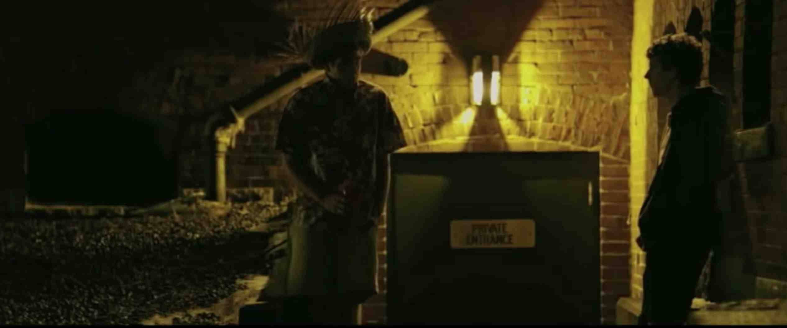
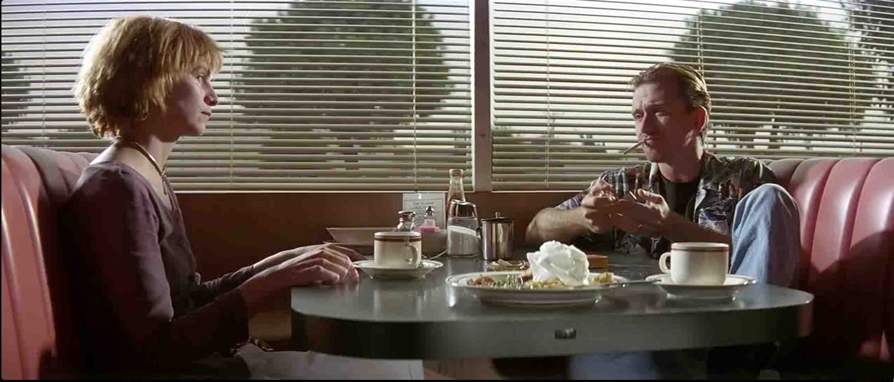
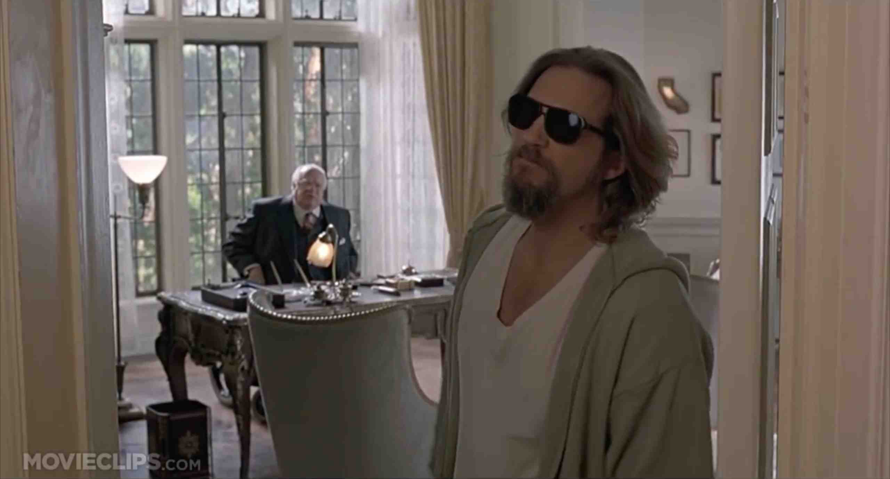
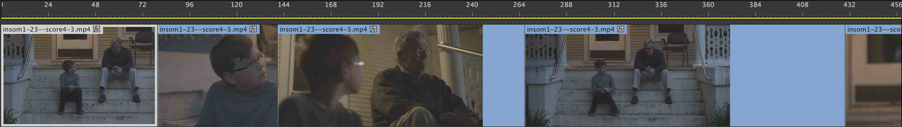

Northwestern University EECS 349: Machine Learning, Spring 2016 - Professor Doug Downey

The Social Network (2010)

Pulp Fiction (1994)

The Big Lebowski (1998)
Cinematic Dialogue Editing Using Machine Learning
Northwestern University EECS 349: Machine Learning, Spring 2016 - Professor Doug Downey Michael Nowakowski | mn@u.northwestern.edu
ABSTRACT
MOTIVATION:
One of the most demanding parts of filmmaking is the editing process. The editor must choose among multiple angles and line readings in order to find the one that best conveys the story while making the audience think that the events are unfolding seamlessly, that there isn’t an editor at all. The motivation behind this project was to model and analyze data from a standard scene type - the two-character dialogue scene covered with traditional five-point coverage - and see if it was possible to use machine learning to generate a near-seamless edit of the scene, on par with that of the film’s original editors. While this is a narrow focus relative to the entire scope of possible sequences to be editing, it is ideally one in which there is enough structure for a machine learning algorithm to begin to learn the “rules” of the art form and produce viable alternative edits.
SOLUTION:
In high-level terms, the primary focus of this project was on creating a model of scenes that offered enough information to be capable of generating new sequences of edits, based solely on the knowledge that the scene is a dialogue sequence involving two characters and that there is standard five-point coverage for the scene. The end solution developed is a list of edits for a sequence that would enable an editor to develop a sequence that closely matches the editing style of the 12 input sequences. For modeling purposes, a data set was created based on 12 scenes from well-known films (feature set included shot type, characters contained in shot, previous shot, duration of each shot in frames, timecode for start of each shot, dialogue in each snippet, and length of entire edited sequence). This model and its subsets were then used in combination with a variety of training algorithms, including Naive Bayes and MLP in Weka, the Keras library, and Andrej Karpathy’s Char-RNN in order to see what could best predict and model a sequence of film edits.

Figure 1: Editing Sequence in Premiere Pro
TEST/TRAIN:
There were two main variations on the data set, which will be denoted as Data Set 1 and Data Set 2. The first, which was the full raw dataset, was developed by manually labeling 12 film sequences taken from The Social Network, Pulp Fiction, and The Big Lebowski. Each edit between clips was described as an “edit point”, and consisted of the current timecode of the sequence, the duration of the clip, the clip that preceded the edit, the clip that followed the edit, the classification of each clip according to cinematic coverage conventions (i.e. closeup, medium close-up, wide, 2-shot, etc), and which characters appear in each shot. The number of edits in a scene ranged from 10 to 116, depending on length of the clip and editing style. In the end, this provided the project with roughly 500 edits categorized, and about 6,000 total values entered (future work would have to start with automated edit detection, as this is a very tedious task). An alternate version of the data set, Data Set 2, was later developed that functions much more like time-series data – each frame in the sequence is classified with a single class (a concatenation of the shot type and the character within it), and the edits are marked by changing of shots. There were tradeoffs to each approach. Each data set was separately tested using a series of techniques in search of one that might yield a good generator/predictor for future sequences based on criteria described above. For Data Set 1, test algorithms began with ZeroR to get an overview of the data set, then testing in Weka attempted to predict the Type of the clip being cut to at each edit point. The final results involved training a Char-RNN on text representations of each data set and then validating by generating brief video sequences that used the cuts specified by the algorithm to assess both how well they match the originals as well as a qualitative analysis of their artistic value.
KEY RESULTS:
The Char-RNN trained on the first dataset produced very lackluster results, but the second Char-RNN, trained on a significantly simplified text version of the data set, was able to generate samples that demonstrated an adherence to the shot-reverse and rhythmic formulas of the input clips. While certainly not as capable as hoped for, the Char-RNN has learned basic editing rules and could be used as a creative tool with addition of a sizable increase in data or data aimed at replicating a more specific editing style.
Based on this new generated data set, I have edited a sequence from the opening of Pulp Fiction to conform to the results of the two Char-RNN samples presented in the full report.
VIDEO DEMO OF EDITING WITH CHAR-RNN (TEMP=1.0 and 1.5)